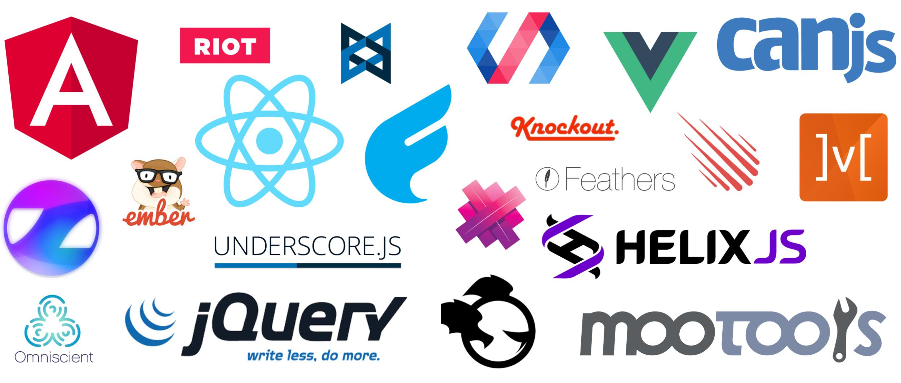

Frameworks e bibliotecas JavaScript: quando e qual usar
Publicado em:
@williammizuta

Recentemente, temos ouvido cada vez mais sobre frameworks e bibliotecas JavaScript, tanto os que já existem há algum tempo como os que acabaram de surgir: jQuery, Zepto, Ember, Backbone, AngularJS, React, Vue.js… mas será que precisamos usar algum deles? Se sim, qual devemos escolher para nossa aplicação? Neste post, vou apresentar porque no Elo7 decidimos por não adotar nenhum desses frameworks ou bibliotecas, e quais foram as consequências dessa decisão.
O que são e para que servem?
Os desenvolvedores front-end se deparam com muitos problemas comuns que precisam ser resolvidos a cada novo projeto que se inicia. Um exemplo disso é a necessidade de dar suporte a navegadores que possuem APIs JavaScript distintas, como acontece com versões legadas de alguns navegadores.
Para resolver este problema, surgiu o jQuery, que se tornou uma das bibliotecas mais famosas e mais utilizadas no mercado. Além de permitir que o desenvolvedor escreva um código que funcione numa gama enorme de navegadores, ele também trouxe uma API mais amigável.
O mercado, junto com as necessidades dos usuários, muda com o passar do tempo. Para acompanhar essas mudanças, os desenvolvedores têm implementado novos frameworks e bibliotecas a fim de suprir as necessidades do momento. Esta mudança é contínua, e por isso, novos frameworks e bibliotecas têm surgido a cada dia.
Quais as desvantagens dos frameworks/bibliotecas JavaScript?
Como toda decisão técnica que tomamos, a escolha de um framework ou uma biblioteca traz suas vantagens e desvantagens. Uma das principais vantagens é podermos utilizar uma solução pronta e testada para problemas comuns, ou seja, não precisamos reinventar a roda para cada projeto. Mas os frameworks e bibliotecas também têm suas desvantagens.
Um dos principais pontos negativos é o acréscimo em kbytes no carregamento da página. Para visualizar um site, o navegador do usuário precisa baixar todo o conteúdo necessário: o próprio html, arquivos css e js, fontes, imagens, etc. O framework e a biblioteca serão um arquivo a mais a ser baixado, aumentando o consumo de rede. Muitas vezes, a página fica em branco ou inoperante enquanto o framework ou a biblioteca não é carregado e executado.
Por exemplo, a versão minificada com compressão gzip do jQuery 3.1.1 tem 34.6kb; do AngularJS 1.6.1, 56.9kb e do React 15.4.0 junto com o React DOM 15.4.0, 44,3kb. Isso se não adicionarmos nenhum plugin e sem contar o código JavaScript que precisamos adicionar para executar a nossa lógica.
Cada vez mais os usuários têm acessado a internet através de celulares, de modo que dependemos de redes móveis para baixar o conteúdo das páginas. Simulando uma conexão 3G normal, com 100ms de latência e 750kb/s de velocidade de download, usando a versão minificada na CDN de cada um dos projetos abaixo, obtivemos o seguinte resultado no Devtools do Chrome:
| Framework | Tamanho | Tempo |
|---|---|---|
| jQuery 3.1.1 | 34,6 kb | 536 ms |
| Zepto 1.2.0 | 10,8 kb | 263 ms |
| Ember 2.10.2 | 514 kb | 5660 ms |
| Backbone 1.3.3 | 8,7 kb | 245 ms |
| Angular 1.6.1 | 56,9 kb | 736 ms |
| React 15.4.0 | 7,3 kb | 179 ms |
| React DOM 15.4.0 | 37,0 kb | 504 ms |
| Vue.js 2.1.8 | 28,7 kb | 405 ms |
Além disso, precisamos pensar na execução: todo código vai ocupar memória e utilizar o processador para executar. Quanto maior e mais complexo, mais recursos do dispositivo serão utilizados. Se o código não for bem projetado, o site pode passar a sensação de “travado”, pois o processamento é pesado para o dispositivo do usuário.
E se você deseja que o conteúdo do seu site seja indexado pelos sites de busca (SEO), o conteúdo precisa estar disponível mesmo que o JavaScript da página não execute. Assim, você não depende dos “bots” conseguirem rodar JavaScript para ser possível ler o conteúdo do seu site. Lembrando que o tempo de carregamento é um critério de SEO, ou seja, quanto mais tempo demorar para carregar a página, menor a chance do seu site aparecer na busca.
Quando devemos utilizar um framework ou uma biblioteca JavaScript e qual escolher?
Ao iniciar um projeto, todo desenvolvedor pensa em qual a arquitetura deverá utilizar junto com os frameworks e as bibliotecas. Essa escolha geralmente é feita seguindo alguma das seguintes formas:
- utilizar a mesma arquitetura do projeto anterior;
- escolher a arquitetura que é mais utilizada no momento;
- ou a última arquitetura comentada na comunidade.
Mas será que essas são as melhores formas de escolher a base do projeto?
Como mencionado anteriormente, os frameworks e as bibliotecas JavaScript foram desenvolvidos para resolver alguns problemas que vários sites se depararam. Mas não significa que todo o projeto vai ter os mesmos problemas. Então, eu acho que o mais justo é analisarmos se o projeto apresenta algum dos problemas que os frameworks e bibliotecas se propõe a resolver e se são realmente necessários, pois toda dependência vai trazer uma queda de performance que nem sempre trará algum benefício em troca.
A arquitetura no Elo7
Um dos nossos principais valores é o foco na satisfação e fidelização do cliente. E isso foi importante para a decisão da arquitetura front-end: desejamos criar um site robusto que todos os usuários possam utilizar e que a resposta do site seja o mais rápida possível.
Para não depender do poder de processamento do device que nosso usuário está usando, decidimos que todo o conteúdo da página deve ser renderizado do lado do servidor. Além disso, o JavaScript da página só agrega a usabilidade do site, mas o usuário pode interagir com o conteúdo da página antes mesmo do JavaScript carregar ou executar.
E uma outra vantagem que ganhamos ao adotar a renderização no lado do servidor foi o SEO: apesar de alguns bots executarem JavaScript simples, não é possível saber o quanto eles conseguem ler do conteúdo se o mesmo for renderizado dinamicamente no lado do cliente.
Com essa arquitetura, nós temos pouca lógica no JavaScript da página. Assim, vários problemas que outros projetos enfrentaram, não apareceram no Elo7. E mesmos os que surgiram foram tão pontuais que era mais vantajoso utilizar pequenas bibliotecas do que um framework completo.
No início, utilizamos pequenas bibliotecas que pesquisamos no site microjs para resolver os pequenos problemas que encontramos. E com o tempo implementamos as nossas próprias bibliotecas, pois, mesmos sendo pequenas, elas faziam mais do que a nossa necessidade. E assim surgiram as seguintes bibliotecas open-source do Elo7:
- async-define: Controle da execução dos JavaScript assíncronos utilizando a arquitetura AMD
- doc-amd: Manipulação do DOM
- tag-amd: Criação de tags dentro de um input
- format-amd: Formatação de números
- events-amd: Controle de eventos do navegador
- cookie-amd: Controle de cookies do navegador
- ajax-amd: Evento de ajax
- i18n-amd: Internacionalização no lado do cliente
- form-amd: Manipulação e validação de formulários
- mask-amd: Máscara para campos de dados
Não vou descrever o que cada biblioteca faz aqui para o post não ficar gigante, mas serão escritos posts explicando com detalhes como cada biblioteca funciona e você saberá se ela se encaixa no seu problema. Além disso, elas estão abertas para que todos possam contribuir. Sintam-se a vontade.
Conclusão
Nenhuma arquitetura ou framework é melhor que outra. Cada uma foi pensada em resolver um conjunto de problemas em específico. Não é só porque há uma empresa grande utilizando uma determinada arquitetura que ela é a bala de prata para todos.
Então, antes de escolher uma arquitetura, identifique quais os seus problemas atuais e os que estão para vir de acordo com o seu produto, para só então decidir se vale a pena ou não usar um framework ou biblioteca e qual é o melhor para você.